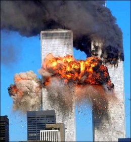
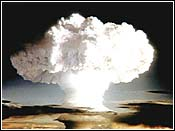

Chapter 10
|
 |
The Human Prospect |
| 
World Trade Center --
9/11/2001
|
Every day you go about without a terrorist attack means
you are a day closer to the next one. General Joseph
Ralston, NATO's Supreme Allied Commander, 2001
You can no longer save your family, tribe or nation; you
can save only the whole world. Margaret Mead
This sense of the unfathomable beautiful ocean of existence
drew me into science. I am awed by the universe, puzzled by
it and sometimes angry at a natural order that brings such
pain and suffering. Yet any emotion or feeling I have toward
the cosmos seems to be reciprocated by neither benevolence
nor hostility but just by silence. The universe appears to
be a perfectly neutral screen onto which I can project any
passion or attitude, and it supports them all. Heinz
R. Pagels |
| |
|
|
Our obligation to
survive and flourish is owed not just to ourselves, but also
to the Cosmos, ancient and vast, from which we spring.
Carl Sagan |
|
|
|
|
|
Online
Edition 2001, 2004, 2005
copyright Ronald C. Pine
|
News items:
|

Nuclear
Bomb Explosion
|
A man who argued with a bar
owner shot and killed him, raped a woman and forced
another woman to decapitate the dead bar owner, police
said yesterday. The suspect was arrested hours later after
he fell asleep in a stolen taxicab. Police said his
victim's head was on the front seat. Authorities said that
the man may have taken the head to keep police from
finding the bullet.
Police who responded to a
disturbance at an apartment smelled the "unmistakable"
odor of burned human flesh and arrested a mother and her
live-in boyfriend after discovering a 4-year-old girl's
body in an oven. Neighbors said they had heard loud
religious music, sounds of fighting and screams of "Let me
out!" before calling police. When police arrived they
found the severely burnt body of the 4-year-old little
girl.
A woman's body which was
apparently dismembered and then thrown down a trash chute
was discovered at a downtown high-rise yesterday. The body
had been further cut up by a trash compactor before it was
found in a bin by a worker about 9 a.m., police said.
Although homicide detectives spent all day in the
compactor room at the high-rise, the woman's head was not
found. |
You
kill us, we kill you . . . . As you undermine our
security, we undermine yours.
Osama bin Laden
One could argue that philosophy
began with the question: why pain? John
Berger
|
"On my last visit to the
Darfur area in Sudan, in June, I found a man
groaning under a tree. He had been shot in the neck and
jaw and left for dead in a pile of corpses. Seeking
shelter under the very next tree were a pair of widows
whose husbands had both been shot to death. Under the
next tree I found a 4-year-old orphan girl caring for
her starving 1-year-old brother. And under the tree next
to that was a woman whose husband had been killed, along
with her 7- and 4-year-old sons, before she was
gang-raped and mutilated. Those were the refugees
sheltering under just four adjacent trees. Thousands of
other victims with similar stories stretched as far as
the eye could see." Nicolas D. Kristof, "Reign of
Terror," New York Times, September 11, 2004
Acts of horror similar to the above stories are
reported almost daily in the newspapers. Perhaps because
they are so common, or perhaps because we do not wish to
think about them, or both, these stories are usually small,
strategically placed somewhere in the back of the newspaper.
The front pages usually have articles on more moderate human
activities, such as tax reform, the President hosting a
dinner for a visiting foreign leader, a political scandal, a
beauty contest winner, or a local winner of a spelling
contest. Underneath the local story on pieces of a woman's
body found in the trash chute was a large picture of a boy
and his six-month-old basset hound who had won first place
at a local Kennel Club competition. |
|
Reptiles with Nuclear and Biological Weapons
|
Rationality will not save
us. Robert
McNamara
During
our era millions of people have been murdered
on purely intellectual grounds. P.J. O'Rourke
|
If we bother to read such
stories at all, most of us console ourselves with the
thought that such acts of violence are obviously the
result of abnormal, deranged minds. Consider, however,
how some normal, sane graduates of our best schools
spend their time and intellectual resources and the
potential violence of their activities. In the 1980s
experts in "conflict management" at the United States
Defense Department were planning for World War IV. A Defense
Guidance report,
the Defense Department's official, annual policy
statement, detailed principles and plans that would
guide our response to the situation after World War III.
Billions of dollars would be spent on submarines,
bombers, and land based missiles held in a secret
reserve, and on a communication system that would enable
the United States to emerge from the ashes of World War
III with sufficient resources for bargaining with and
coercing whatever was left of the leadership of the then
Soviet Union.
Over 1 billion dollars would
be spent to render survivable specially modified Boeing
747s and 707s for a specially chosen civil and military
leadership. Because fixed command centers are unlikely to
survive the unleashing of the thousands of nuclear weapons
used in a World War III, the president, his civilian
staff, at least 16 top successors, and top military
commanders and some of their spouses would take to the air
when World War III appeared inevitable. A priority $18
billion would be spent on special "survivable,
reconstitutable and secure" communication equipment to
ensure that this surviving leadership would be able to
communicate with the submarines (hidden beneath the Arctic
ice cap), and other nuclear delivery forces held in secret
reserve.
|
Logic does not exclude madness.
Erich Fromm
|
Testimony at congressional hearings and discussions with
other defense consultants revealed that dealing with the
hardware considerations in this plan were much easier than
the software or personal considerations. Even though
billions of people worldwide would most likely be dead,
concern arose over a "protocol complication" in
considering which spouses would rate seats on special
helicopters that would take the civilian and military
command force to the waiting planes. Obviously, the
spouses of the president and vice president rate seats,
but given the limited space, how far down the line of
civilian staff and the 16 successors should we go?
The main principle governing this plan was that "the
United States would never emerge from a nuclear war
without nuclear weapons." Government officials and
military leaders consistently emphasized that drastic
actions such as these are necessary for defending the
country. Yet because the report acknowledged that only the
select civilian and military command force, and reserve
nuclear forces would survive, it was difficult to
understand how average citizens, who would be dead, would
be defended by this considerable spending of their tax
money.
|
If we are not by nature violent creatures, why do
we seem inevitably to create situations that lead to
violence? Lionel
Tiger and Robin Fox,
The Imperial Animal
Information is armor.
|
The response from military leaders is that such drastic
actions are the most "intelligent" courses given human
nature. Government and military leaders do not want these
wars to happen. The psychology is one of deterrence.
We must plan for such terrible things, and spend precious
resources, otherwise we display weakness and invite attack
from our enemies. As in the rest of nature, it is
important that one present a tough, serious stance in
defending territory and interests. Because even the winner
of a conflict risks critical injury, behavior patterns
have evolved to avoid physical combat. Many animals when
threatened have ways of changing their physical
appearance, making themselves appear more fearsome and
implying that any attack would mean doom for the attacker.
Displays of confidence, deterrence, intimidation, and
elaborate bluffs have evolved as methods to avoid
violence. So, World War IV must be planned to avoid World
War III!
Fast forward now to the twenty-first century and we find
the United
States implementing a
Future Combat System plan that will cost at least $100
billion. This plan will
invoke a concept called "force transformation," and is
intended to fully digitize and network war.
The basic idea is that "information is armor." By computer networking manned
and unmanned surveillance machines all over the world with
fast deployed vehicles, much lighter than old fashion 64
ton tanks, and a relatively small number of heavily armed
soldiers, coupled with air support, all empowered by the
most technologically sophisticated targeting, sensing, and
imaging available, a new high-tech swarming force will be
created to meet any post 9/11, asymmetric war challenge.
Unfortunately the human species has also evolved cognitive
intelligence. As noted in Chapter 9, our physical
inferiority has led to a powerful indirect control over
the environment. We have been able to figure things out.
So our knowledge that material things consist of atoms and
that enormous amounts of energy are released in splitting
the nuclei of plutonium and uranium allows us to produce
nuclear bombs, and our knowledge of genes and DNA now
allows for the possibility of devastating biological
weapons. Thus, our bluff displays can now be backed up
with an enormous destructive force that risk the health of
the entire planet.
The cold war is over and it is unlikely that there will
be a World War III between the United States and Russia.
The threat now is terrorism and megaterrorism, terrorists
with weapons of mass destruction. Will the world be a
safer place in the twenty-first century by meeting threats
with force alone? It is worth reviewing the history of the
cold war to avoid a premature judgment.
|
Nuclear War is incalculable.
Freeman Dyson,
Weapons and Hope
|
From the end of World War II to the late 1980s, the
former Soviet Union and the United States accumulated an
unprecedented mutual deterrence. A common measurement of
destructive firepower is the megaton, a million tons of
TNT. The total firepower of World War II was three
megatons. Forty million people died in this war -- 20
million alone in the Soviet Union. By the late 1980s the
combined fire power of the United States and the Soviet
Union was about 18,000 megatons, or 6,000 World War IIs.
Consider the depth of intellectual activity and scheming
for position involved in planning this destructive force.
By the late 1980s the Soviet Union possessed about 9,500
nuclear strategic warheads and the United States close to
10,000. But the total megatonnage was 17,000 for the
Soviets and only 3,500 for the United States.(1)
|
Perhaps a species that has accumulated ... tons of
explosive per capita
has already demonstrated its biological unfitness
beyond any further question. Arthur C. Clarke
|
These weapons of assured death could also be delivered in
different ways. About 71 percent of the Soviet bombs could
be delivered by land-based missiles, 25 percent by
submarines, and about 4 percent by bombers. The United
States used a more balanced strategy: 25 percent
land-based missiles, 50 percent submarines, and 25 percent
bombers.
To rally political support for its funding, the United
States' Defense Department claimed that the Soviet Union
had put together the largest submarine fleet in the world.
Yet most of these submarines were noisy, technologically
backward, and relatively limited in the number of nuclear
weapons deliverable. The United States had the Polaris,
Poseidon, and the very modern Trident
submarines. A single Poseidon could carry 9
megatons or three World War IIs, enough firepower to
destroy 200 large cities. By the end of the cold war the
United States had 31 Poseidons. A single Trident
submarine carries 24 megatons, enough to destroy every
major city in the former Soviet Union. Thus, using
sophisticated MIRV technology (Multiple, Independently
Targetable, Re-entry Vehicles), the United States could
deliver many more bombs (approximately 6,000) than the
large Soviet submarine fleet could. MIRV technology allows
several nuclear bombs to be launched from a single
missile. (A single Trident 2 missile can carry 12
nuclear bombs.) When the missiles achieve the appropriate
altitude, the warheads divide into independent bombs that
can then strike different targets. However, the United
States advantage in terms of submarine delivery was
matched by the awesome delivery capability of the very
mobile Soviet land-based missiles.
|
| Lies
prepare the way for missiles . . . . There is a very
direct relation today between the minutes of a meeting
and the minutes of agony. John Berger
|
At that time both the United States and the Soviet Union
had enough nuclear bombs to target major cities and
military sites many times. Moscow was targeted with 36
nuclear bombs, New York with about 20, and even Honolulu
with 10. Political debates raged over which side had an
advantage. Yet the debates seemed pointless. The highly
educated targeters, daily planning for different nuclear
war scenarios, knew they would run out of targets and
victims long before they ran out of bombs. Consider
Jonathan Schell's description of the impact of a major
Soviet attack on all the major U.S. civilian and military
targets.
In the first moments of a 10,000-megaton attack
on the United States. . . flashes of white light would
suddenly illuminate large areas of the country as
thousands of suns, each one brighter than the sun itself,
blossomed over cities, suburbs, and towns. In those same
moments. . . the vast majority of the people in the
regions first targeted would be irradiated, crushed, or
burned to death. The thermal pulses could subject more
than six hundred thousand square miles, or one-sixth of
the total land mass of the nation, to a minimum level of.
. . heat that chars human beings. . . . Tens of millions
of people would go up in smoke. As the attack proceeded,
as much as three-quarters of the country could be
subjected to incendiary levels of heat, and so, wherever
there was inflammable material, could be set ablaze. In
the ten seconds or so after each bomb hit, as blast waves
swept outward from thousands of ground zeros, the physical
plant of the United States would be swept away like leaves
in a gust of wind. The six hundred thousand square miles
already scorched. . . would now be hit by blast waves. . .
and virtually all the habitations, places of work, and
other man-made things there -- substantially the whole
human construct in the United States -- would be
vaporized, blasted, or otherwise pulverized out of
existence. Then, as clouds of dust rose from the earth,
and mushroom clouds spread overhead. . . day would turn to
night. . . . Shortly, fires would spring up in the debris
of the cities and in every forest dry enough to burn.
These fires would simply burn down the United
States.
In any city where three or four bombs had been used -- not
to mention fifty, or a hundred -- flight from one blast
would only be flight toward another, and no one could
escape alive. Within these regions, each of three of the
immediate effects of nuclear weapons -- initial radiation,
thermal pulse, and blast wave -- would alone be enough to
kill most people. . . . The ease with which virtually the
whole population of the country could be trapped in these
zones of universal death is suggested by the fact that the
sixty per cent of the population that lives in an area of
eighteen thousand square miles could be annihilated with
only three hundred one-megaton bombs. . . . That would
leave nine thousand seven hundred megatons, or
ninety-seven percent of the megatonnage in the attacking
force, available for other targets. . . .
Needless to say, in these circumstances evacuation
before an attack would be an exercise in transporting
people from one death to another. . . . In a full-scale
attack there would in all likelihood be no surviving
communities, and . . . everyone who failed to seal
himself off from the outside environment for as long as
several months would soon die of radiation sickness.
Hence, in the months after a holocaust there would be no
activity of any sort, as, in a reversal of the normal
state of things, the dead would lie on the surface and
the living, if there were any, would be buried
underground.(2)
|
We have no right to
place the possibility of this limitless, eternal
defeat on the same footing as risks that we run in the
ordinary conduct of our affairs in our particular
transient moment of human history ...
Jonathan Schell,
The Fate of the Earth
When human things are seen in the light of the
universal power unleashed onto the earth by nuclear
weapons they prove to be limited and fragile, as
though they were nothing more than a mold or a
lichen that appears in certain crevices of the
landscape and can be burned off with relative ease
by nuclear fire. Jonathan Schell, The Fate of the Earth
|
Schell continued
his narration of zones of universal death by pointing out
that these are only the immediate and local effects of a
nuclear war.(3) The United
States would unleash a similar amount of destruction on the
Soviet Union, and other countries would also be targeted by
both sides due to various alliances or to assure that these
countries did not become the new superpowers. Thus, Schell
argued, one must consider seriously the long-range
irreversible global effects of a World War III on the life
of planet Earth. What would be the fate of all life on Earth
from the enormous amount of radioactive fallout that would
result from a 20,000 megaton exchange? What would happen to
the hundreds of the nuclear power plants in both countries?
What would happen to the world's ecosystem if the deadly,
remarkably long-lived radiation from these plants was added
to the already overwhelming radioactive fallout? Would only
insects survive? (Depending on the species, insects can
survive between 10 and 1000 times the dosage of radiation
that mammals can.) What would be the result of having the
Earth littered with the dead bodies of billions of animals
and human beings, and the destruction of the insects natural
enemies, the birds? If substantial numbers of human beings
survived, what kind of medical epidemics would ensue? With
increased radiation, increased rates of genetic mutation in
every species would be inevitable, and the cancer rate would
escalate.
Because much of the world's vegetation would be
destroyed, what would be the consequent effects in terms
of land erosion and the glutting of the Earth's seas and
waterways with the lost topsoil? Any remaining topsoil
would be extremely radioactive. What would happen to the
world's agricultural output? What would happen to the
ozone layer that protects all life on Earth from the
harmful effects of ultraviolet radiation? What would be
the effects on the Earth's climate of millions of tons of
dust and debris thrown into the atmosphere and the smoke
from fires blocking out the Sun? Would a nuclear winter
result?
|
|
Schell concluded by noting
that we had reached the point in the arms race where for
the first time in the history of human combat there is a
"zone of uncertainty" about such drastic human-initiated
effects. Once we could safely believe that no matter how
ignoble, brutal, pointless, and destructive a war, life
would recuperate and go on. We can no longer believe this.
With current technology we have reached a "zone of
extinction." As with the cosmic perspective, our current
technological capability in warfare forces us to think
about that which human beings are the most reluctant to
face, but is most important as a guide to action. We must
think about our contingency and our finitude. According to
Schell,
As human life and the structure of human existence are
seen in the light of each person's daily life and
experience, they look impressively extensive and solid,
but when human things are seen in the light of the
universal power unleashed onto the earth by nuclear
weapons they prove to be limited and fragile, as though
they were nothing more than a mold or a lichen that
appears in certain crevices of the landscape and can be
burned off with relative ease by nuclear fire. . . .
Once we learn that a holocaust might lead to
extinction we have no right to gamble, because if we
lose, the game will be over, and neither we nor anyone
else will ever get another chance.(4)
We have no right, said Schell,
after being produced by so many lucky circumstances, of
silencing the music of existence on this planet, of toying
with the possibility of reinitiating "the simplicity of
nothingness."
|
What a chimera ... is
man! what a novelty, what a monster, what a chaos,
what a subject of contradiction, what a prodigy! A
judge of all things, feeble worm of the Earth,
depository of the truth, cloaca of uncertainty and
error, the glory and the shame of the universe! Blaise Pascal
|
How much have things changed since this dangerous time?
Somewhere in the world today there is still a bureaucrat,
soon to return to his wife and children, signing the
necessary forms demanded of organized society for funding
the next increment of weapons.(5)
Somewhere someone will be using the gift of our evolution,
our cognitive intelligence, to design more and better
bombs using sophisticated mathematical equations to
compute the kill ratio per megaton of a ground-burst
explosion verses that of an air-burst, or the destructive
force of "deep-penetration" to knock out heavily fortified
nuclear weapon launch sites.(6)
We are not done with nuclear weapons.(7)
For instance, the policy of the United States has simply
changed from targeting sites primarily in Russia to
potential countries that might use biological or chemical
weapons against it. And Russia, now weakened and
surrounded by a more powerful military force than in the
days of the cold war, changed its policy in 1993 from a
pledge not to be the first to use nuclear weapons to that
of a "full fledged" response using any means necessary if
attacked by conventional weapons. At best, current
treaties between the United States and Russia call for
reduction of strategic missiles to about 2000 each by the
first decade of the twenty-first century. Defense
officials now talk about the "NBC threat" -- nuclear,
biological, and chemical. And critics of the so-called
peace dividend supposedly resulting from the end of the
cold war warn that most countries have shifted resources
away from developing nuclear weapons only because they
have discovered the potential of biological weapons. The
development costs are far less (they require the same
machinery as that for making beer), the delivery to
targets more clandestine (they can be delivered in a
suitcase or a crop duster, and/or made to activate a
decade later as in the case of a genetically engineered
slow virus), and the selectivity chillingly appealing in
an era of escalating ethnic wars throughout the world (it
may be possible to engineer viruses or bacteria that would
infect only particular ethnicities).(8)
|
Evolution will take its course. And that course has
generally been downward. The majority of species have
degenerated and become extinct, or ... worse,
gradually lost many of their functions. The ancestors
of oysters and barnacles had heads. Snakes have lost
their limbs and ostriches and penguins their power of
flight. Man may just as easily lose his intelligence. J.B.S.
Haldane,
"Man's Destiny"
|
By the mid-1990s, in spite of the relative economic
prosperity in most developed countries, the level of human
groups interacting, hating and attempting to kill each
other had reached epidemic proportions. Hundreds of ethnic
wars raged throughout the world and more innocent
civilians were being killed, women raped, and children
maimed and orphaned than occurred during the cold war. Not
including defense budgets, $600 billion in weapons were
sold worldwide, 120 million land mines were buried in over
70 countries, and 500 million military weapons were in the
hands of criminals, vigilantes, and private armies, with
90 thousand armed gang members in Los Angeles alone. By
1994, 43% of the entire United States foreign aid budget
consisted of arms-export subsidies, and the United States
sold more than $33 billion in arms, triple the amount
during the last years of the cold war.(9)
In Cambodia 1 of every 250 people had been mutilated by a
land mine. The top business in this poor country was a
maker of artificial arms and legs. In Bosnia there
were 18,000 minefields. Military experts were warning that
it would take over 1,000 years to remove the mines buried
all over the world. With land mines humans had used their
engineering intelligence to design 600 types. Some were
designed to tear off a person's leg, some to fragment and
rip a person's body up with thousands of little bullets,
and some, nicknamed "bouncing Betties," to pop out of the
ground and explode at the waist cutting a person in half.(10) With this much hatred
mixed with this much intelligence, what would we soon do
with biological weapons? Enough botulism toxin the
size of a softball could easily kill several million
people. Only 1 billionth of a gram is needed per
person.
In spite of the end of the cold war, the human species is
the most violent of animals and its behavior on this
planet still risks its own extinction. How did we get in
such a predicament? How did the human species, born from
the hopeful struggle of billions of years of chemical and
biological evolution, historical heirs of stargazers and
the inquisitive minds of the ancient Greeks, of the lovers
of mathematical symmetry and contemplators of the harmony
of natural law, reach this unforgivable plight? Two
essential questions must be answered in addressing the
human prospect: What in human nature has produced this
zone of extinction? And what, if anything, will allow us
to live through what Carl Sagan has optimistically called
this period of our "technological adolescence"?
|
Reasoning is the only ability that makes it
possible for humans to rule the Earth and to ruin it. Michael Scriven,
Reasoning
|
Human beings share many behavior patterns with animals.
We have day to day routines, are sensitive to social
hierarchy, position and status, are obedient to precedent
and ritual, and engage in acts of aggression,
territoriality, and dominance. Our participation in fads
and concern for fashion are related to ancient animal
sexual strategies. We routinely act in repetitive,
obsessive, unthinking ways while thinking that we are
thinking about what we are doing. Our leaders "posture"
with a facade of strength on a grand diplomatic and
military scale both for their people and the other side.
In Chapter 3 we took a brief look at some of the possible
social implications of our evolutionary inheritance from
reptiles and mammals. At some risk of oversimplifying
current research in ethology, neuroethology, and
evolutionary psychology, we must consider seriously these
questions. To what extent can humans be considered no more
than complex reptiles that have developed more intricate,
but dangerous, ways of implementing the basics of
survival? To what extent are our reason and intelligence
driven by unconscious evolved strategies, appropriate in
an earlier environment but now detrimental to our very
survival as a species?
All species must have some method of defense. Most higher
animals have evolved innate displays of defensive
aggression. Only one has combined the naturalness of
defensive aggression with a cognitive ability; only one
has been able to unlock the mystery of the atom and its
many exciting implications for a new understanding of
reality and meaning in life but combined the resultant
knowledge with the naturalness of defending itself, its
clan, and its territory, to produce an unprecedented zone
of possible extinction for itself. Only one has
learned the secret of DNA with its promise of unlimited
medical solutions to disease and premature death while
simultaneously opening the ultimate Pandora's box of
deliberately creating life to kill those we hate.(11) Could our species be but
a brief aberration, a momentary violent experiment, never
to be repeated again anywhere else in the universe?
|
The precondition for thinking
politically on a global scale is to see the unity of the
unnecessary suffering taking place.
This is he starting point. John
Berger |
As part of a culture convinced of the rationality of
existence and the purposefulness of human life, Aristotle
defined our species to be a "rational animal." Consider
though how an unbiased extraterrestrial observer might see
us. How would they view creatures who go about the
business of obtaining basic necessities, producing
offspring, loving and learning about life -- all the while
with explosive devices strapped to each of their backs
equal to 15 tons of dynamite, any or all of which could go
off at any moment? Consider what they would think if they
asked these curious creatures why they lived this
self-imposed, dangerous way and the creatures responded
that living this way was necessary for defense!
By the 1990s the world's superpowers had produced, for
the most part, step by rational step, enough nuclear
destructive power equal to 15 tons of dynamite for every
person on Earth. The United States and the former Soviet
Union had each adopted, based upon sound historical and
geographical considerations, what appeared to their
leaders to be the best possible policy of defensive
aggression. The United States has adopted a mixed policy
of "mutually assured destruction (MAD)" and "limited first
use" of nuclear weapons. Strategically, the United States
planned to defend its territory and interests through a
policy of "deterrence" (a term that translates to mean
"intimidation" in Russian). A nuclear force was amassed
that assured the destruction of every Soviet city many
times over. Tactically, the United States adopted a
limited first-use policy of containment, thinking that in
this way escalation towards assured destruction would be
avoided. In other words, if the Soviet Union with its
overwhelming superior conventional forces had invaded
Europe, the United States made it clear that smaller,
tactical nuclear weapons would be used to stop this
invasion. Thus, the United States had refused to renounce
the first use of nuclear weapons. The Soviet Union on the
other hand had renounced the first use of nuclear weapons
and adopted the combined doctrines of "counterforce" and
"first strike."
|
We are good, perhaps a little too good, but we
are also a little stupid; and it is this mixture of
goodness and stupidity which lies at the root of our
troubles. Karl Popper, Conjectures
and Refutations
A great deal of philosophy...was not intended
as an edifice for men to live in, safe from the sun
and wind, but as a challenge: don't sleep on! there
are so many vantage points; they change in flight:
what matters is to leave off crawling in the dust. Walter
Kaufman, Critique of
Religion and Philosophy
|
The distinction between first use and first strike would undoubtedly mean
little to the millions, perhaps billions, of people killed
in a World War III, but psychologically it was an
important distinction. Not understanding it and how it
relates to human nature could have had devastating
consequences. Historically, Russia had been invaded many
times. From the Mongol hordes, to Napoleon, to Hitler,
history had produced in the Russian people a mixed
psychology of the need to strike first when facing an
overwhelming outside threat, the inevitable
destructiveness of war regardless of who is first to
attack, and an agonizing muddling through of some
survivors no matter what the level of destruction. Thus,
the Soviets amassed huge weapons and aimed them at the
land based missiles of the United States. If tactical
nuclear weapons were used against them in Europe, or if
the initiation of nuclear hostilities appeared likely,
they notified the world that they would "preempt" the use
of missiles against their cities by unleashing their
entire strategic nuclear force first. In other words,
fitting with their history, they would hurt the other side
first as much as possible before they themselves got hurt.
The policy of the United States said, "Shoot at us and you
will be assuring your own destruction"; the policy of the
Soviet Union said, "If you are about to shoot at us, we
are going to hurt you as much as we can before you do.
Although we are going to die, we are going to take as many
of you with us as possible."
Thus, the United States remembered Pearl Harbor and was
terrified when they saw the Soviet Union pointing missiles
at U.S. missiles and preparing their civilian population
for some sort of survival. Survival implied that assured
destruction would not work. The Russians remembered Hitler
and the 20 million of its citizens that died in World War
II, and felt the consequent paranoia of the results of the
policy of containment and being surrounded by hostile
forces. Consider what it was like to be a Russian survivor
of World War II knowing that there were missiles in Great
Britain, France, Italy, Turkey, the Mediterranean Sea, and
China, aside from those both in the continental United
States and on its many submarines, all of which at any
moment could become a new apocalyptic Napoleon or Hitler.
How would the United States have reacted if there had been
missiles in Canada, Mexico, and South America at any
moment threatening to be the next Pearl Harbor?
Consider what the children were taught in each culture.
In the Soviet Union every child knew that there was only
one country that had been crazy enough to actually use
nuclear weapons on defenseless civilians. Only the United
States had been demented enough to sear the flesh from the
bones of several hundred thousand people in Hiroshima and
Nagasaki. Every Soviet child knew that the United States
first developed this ominous threat to the human prospect.
Every Soviet child was taught that this mindless society,
governed by heartless, greedy capitalists had the most
powerful military force ever assembled and that through
its influence and aid had surrounded them with death.
Every Soviet child knew that this impulsive country had
even invaded their country before. So they were taught
also that only the historical strength of the Soviet
people and their valiant military forces would keep it
from happening again.
On the other hand, in the United States every child knew
that there was only one true threat to global freedom,
that an "evil empire" threatened an end to the development
of the unlimited potential and growth of humankind. In the
United States every child was taught that there was only
one country that had made negotiations in reducing nuclear
missiles difficult, that their president was first in
proposing and had tried many times to reduce the
land-based missiles of both sides but met with
unreasonable demands from the funny-talking,
sinister-looking, atheists from a strange land.(12)
And, of course, in the United States every child was
taught that God was on their side.
It is worth noting that the United States policy of
"limited" first use evolved gradually out of a total MAD
policy of the early 1960s. Initially, at the
beginning of the Kennedy administration, United States
military policy called for massive retaliation even if the
Soviets simply invaded West Berlin. Berlin was not
seen as a single city with a few million people. It
was a symbol for the entire cold war with the evil empire
of the Soviet Union. If the United States did not
stop the Soviets in Berlin, the Soviets would be
encouraged to attack elsewhere and the United States'
position in an all out nuclear war would then be weaker.
|
Natural selection has poised us on a knife-edge
of uncertainty, destined to tumble, luckily, into
knowing or, oftener, unluckily, into trembling. Melvin Konner,
The Tangled Wing
There are some (the United States)
who have continued to dangle a cigarette from their
mouth (building new nuclear weapons) and tell
everybody else not to smoke. Mohammed ElBaradei, director
of the International Atomic Energy Agency
How come Israel
can have them (nuclear bombs) and we can't. It makes me angry." Mansour Jahanbakhsa, Iranian
businessman
|
So, called SIOP-62 (Single Integrated Operational Plan),
the United States planned to send the full arsenal of its
nuclear missiles at the Sino-Soviet Bloc (Russia, China,
Poland, East Germany, and Balkan states), a total of 3,423
nuclear weapons at 1,077 military and urban-industrial
targets. (As noted above, many more than one bomb
per target was planned.) This was estimated to kill
52% of the population (60 million people) and destroy 82%
of the buildings just in Russia alone.
In 1961 the Soviet leader Nikita Khrushchev threatened to
retake West Berlin by force. About 10,000 people a
month were leaving East Berlin (controlled by the Soviets)
for West Berlin. Eventually the Soviets built the
famous Berlin Wall to stop this exodus. If
Khrushchev had made good on his threat, it would have
forced a young President Kennedy to implement United
States policy, a choice viewed as suicide or surrender,
holocaust or humiliation. Although records of the
intense discussions show now that the United States
seriously considered attacking first -- a position taken
by the then commander-in chief of the Strategic Air
Command, General Tommy Power -- Harvard professors and
experts at the think-tank called the Rand Corporation
eventually won support for a new SIOP-63 policy of limited
first use. This plan called for using only some of
the United States nuclear weapons. In a surprise
first strike attack they would be fired mostly at military
targets. Only a million Soviet people would be
killed. The United States would hold in reserve the
rest of its nuclear missiles and hope that the Soviets
would be too demoralized to fight back, knowing that most
of their offense was gone and that the United States would
devastate the rest of their population if they fired
back. This plan was advertised as a way of making
nuclear war "rational." It counted on the belief
that the Soviets would not be too pissed off after losing
only a million people, and would not strike back with
irrational revenge.(13)
With either policy the world was very close to nuclear
war in 1961 and then again in 1963. Note that the
crucial point is that both times each side was faced with
either backing down and showing weakness or an all-out
nuclear war. From an evolutionary psychology point
of view, it is perfectly natural not to want to show any
weakness. Appeasement always seems out of the
question to military leaders. Appeasement invites
attack. But now we seem to have appeasement or total
destruction as our choices.
Volumes have been written on the technical strategies,
and the historical reasons for these strategies, of both
sides. Countless pieces of analysis have been debated on
the relative merits of counterforce verses assured
destruction, on the incalculable factors of "collateral
damage" (read "dead civilians") and missile survivability,
or on such esoteric factors as the "throw weight" of a
missile warhead. But from a standpoint of human nature and
our evolutionary history, the picture is as simple as
sandlot fist fight. Someone developed the bomb. Their
enemy became afraid, so they developed the bomb. The first
side became afraid, so they developed many more bombs. The
other side got more bombs and aimed them at the first
side's bombs. They also had the audacity to plan to try to
save a few of their people. The first side became
absolutely terrified that their own bombs might be
destroyed before they could be used and that the other
side was "threatening" to survive! So they elected a
leader (Ronald Reagan) who spent over $1 trillion dollars
in a few years on more defense, complete with a more
accurate missile called the Peacekeeper and
research on the use of nuclear weapons and particle beams
in space.
In an atmosphere of reciprocal fear, where each natural
act of defense terrorizes the other side, any sign of
weakness is an invitation to destruction. Hence,
escalation appears inevitable. If you have a nuclear bomb,
then I must have a nuclear bomb. If you have ten, then I
must have ten. If you have 1000, then I must have 1000.
And if you are stupid enough to reduce your 1000 to 500, I
am still going to keep my 1000! The cold war may be over,
but nuclear bombs are here to stay and similar standoffs
will be played out now between smaller countries with the
natural attitude, "We won't be the first (to use nuclear
weapons), but we won't be the second."(14)
In the light of the World Trade Center attack on
September 11, 2001 by Muslim fundamentalists, it is also
worth noting that during the 1980s the evil empire for the
United States was the Soviet Union and not Muslim
fundamentalism. At first when the Soviet Union
invaded Afghanistan to oppress a potential Muslim
revolution the occupation appeared to be successful.
But seeing a chance to weaken the Soviet Union with a
Vietnam-like war, President Reagan's Central Intelligence
Agency director, William Casey, decided to work with
Pakistan to encourage and recruit radical Muslim
fundamentalists from around the world to help the Afghan
mujaheddin. Estimates at the low end say that 35,000
Muslim extremists from over 40 countries came to
Afghanistan to be trained and supported by Pakistan and
the United States CIA. At the time it appeared to be
the practical action to take. To not capitalize on
the opportunity would have appeared to be a sign of
weakness. Men who appeared to be "freedom fighters"
in the 1980s became "terrorists" in the twenty-first
century.
|
The military
establishment looks on the peace movement as a
collection of ignorant people meddling in a business
they do not understand, while the peace movement
looks on the military establishment as collection of
misguided people protected by bureaucratic formality
from all contact with human realities.
Freeman Dyson,
Weapons and Hope
Hey
Franqui, how many kills you got?
I don’t know,
man. Sometimes they sort of vaporize when we
hit them. Sgt.
Joshua Franqui, Fallujah, Iraq,
11/11/2004
We practice the good terrorism.
Osama bin Laden
|
Why can't the leaders of the world see what the average
person sees? Why can't we all just cry "Enough of this,
enough. Let's throw away the backpacks. Not little by
little, but all of them now!" Why can't we all just
get along? The leaders of the world -- with their
military strategists, their team of political experts, and
their highly educated advisors -- see this attitude as
naive, emotional, and irrational. Unilateral disarmament
induces a perception of weakness, and in nature any sign
of weakness is an invitation to be attacked. Having an
insane number of nuclear weapons is a way of "tricking"
ourselves into peace. Without these weapons we not only
make the world "safe for conventional war," but the
process of reduction introduces an element of uncertainty
that could make one side think it could attack and get
away with it. Similarly not responding to terrorism
with more terrorism only encourages more terrorism.
It is an evil world. It is logical, rational, and
necessary to use force. Kill or be killed.
Not surprisingly this is the same justification used by
terrorists to justify acts of terrorism. The
classical philosophical justification for terrorism is a
document known as "The
Philosophy
of the Bomb." It was written as a protest to
Gandhi's approach of nonviolence against the
British. The authors of this document argue that a
nonviolent approach is immoral because it allows for
continued violence by an oppressor against weak and
helpless people. So, the authors urge the very same
alleged eye-for-an-eye realism philosophy argued for by
the defenders of freedom and democracy. Reason
demands whatever violent acts are necessary to end violent
acts. Terrorism against terrorism is the only way to end
terrorism. According to the document,
Terrorism instills fear in the hearts of the
oppressors, it brings hopes of revenge and redemption to
the oppressed masses, it gives courage and self-confidence
to the wavering, it shatters the spell of the superiority
of the ruling class and raises the status of the subject
race in the eyes of the world, because it is the most
convincing proof of a nation's hunger for freedom.
The way of the world is like this. You have a friend:
you love him, sometimes so much that you even die for
him. You have an enemy: you shun him, you fight against
him and, if possible, kill him. The gospel of the
revolutionaries is simple and straight. It is what has
been since the days of Adam and Eve, and no man has any
difficulty about understanding it.
A revolutionary believes in reason more than
anything. It is to reason, and reason alone, that
he bows . . . Do people still expect us to forget and to
forgive? We shall have our revenge -- a people's
righteous revenge on the tyrant. Let cowards fall back
and cringe for compromise and peace. We ask not for
mercy and we give no quarter. Ours is a war to the
end -- to Victory or Death.
This then is how we have arrived at the present crossroad.
We have used our total nature: irrational fear to some
extent, greed in part(15),
but mostly because of our reason. Like the man who took
the logical step of taking the decapitated head of his
victim so the police would not find the bullet, each side
during the cold war, starting with its own premises and
circumstances, had taken the next logical step towards
armageddon. The essential paradox of the nuclear age is
that we have rationally and naturally escalated our stance
of defensive aggression to the point that there is no
conceivable just cause in which our ultimate tools of
defense can be used. Furthermore, while the United States
and Russia attempt to reduce their arsenals, the number of
tensions between other countries and ethnicities has been
exacerbated by new technology. Will terrorism
against terrorism end terrorism? Or will it simply
produce more recruits for terrorism? Can we kill our
way to safety?
If one of our best characteristics, our ability to think and
figure things out, has produced such a wide zone of possible
extinction, can there be any hope for the human prospect? Is
this messy mixture of a cerebral cortex with its powerful
cognitive skills sitting on top of a reptile brain with
innate survival strategies a hopeless evolutionary gesture?
|
I'll tell you that whatever happens, and whatever
mess they make up yonder, we shall win the battle
.... War is not a polite recreation, but the
vilest thing in life, and we ought to understand
that and not play at war. We ought to accept it
sternly and solemnly as a fearful necessity. Leo Tolstoy's Prince Andrei, War and Peace
If we are to avoid destruction, we must first of
all understand the human and historical context out of
which destruction arises. We must understand what it
is in human nature that makes war so damnably
attractive. Freeman
Dyson, Weapons and Hope |
Weapons
and
Hope
Perhaps we have but one hope.
If as a species we are a crazy mixed up creature, then at
least we can be aware of our craziness. The major question
is whether this awareness will be more than a witness to
our destructive nature; whether the knowledge gained from
such self-reflection can lead to steps which avoid pushing
the buttons of our reptile heritage. For instance, animal
research has taught us that crowding leads to abnormal
destructive behavior. As creatures possessing such
knowledge we can take steps to avoid creating situations
that will initiate this behavior in ourselves. We can
initiate policies of birth control, establish disciplines
of research in future studies, and adopt energy and
economic strategies which implement the results of
understanding ourselves better. Unlike an animal that is
unaware that its evolved characteristics are no longer
compatible with its environment, the human species has,
through its unique cognitive intelligence, the ability to
have knowledge of its possible impending doom. Even though
our rational ability is in large part responsible for
getting us into the mess we are in, it will also be
responsible to a large extent in getting us out of it.
In December of 1996, 60
retired military leaders from 17 countries called for
disbanding the world's entire nuclear arsenals. Military
experts in the United States were following a different
strategy: Make nuclear weapons ineffective and obsolete by
developing better weapons, high-tech conventional bombs,
precision-guided by global-positioning satellites capable
of landing within 10 feet of a strategic nuclear target.
These planners were following
the advice given by Freeman Dyson, a highly respected
physicist and military advisor, in his 1984 book Weapons
and Hope. Although appreciating the idealism of
critics, like Albert Einstein who advocated that
scientists refuse to cooperate either directly or
indirectly in weapons research, Dyson assumed the stance
of "a teller of complicated truths to people who prefer
simple illusions," and argued that we must adopt a
politically more aware and creatively more realistic
picture of our present predicament. Groups of people will
never stop hating other groups of people and technologies
of destruction will never go away. However, according to
Dyson, by using the total arsenal of our cognitive
intelligence, we can trick ourselves politically and
militarily down a path of hope. By becoming aware of the
historical, geographical, and human reasons for the
development of the conflict, and by developing what Dyson
calls "the weapons of David," the Goliath of massive
nuclear destruction could become a vestige of an immature
time in the development of the human species. In other
words, assuming that the dictates of our reptilian
heritage and innate tribal imperatives for survival and
defense will always be with us, we need intelligent
weapons, weapons that will put out the relentless fire of
our inherent fears, "weapons which are capable of
defending territory without destroying it in the process."
According to Dyson,
revolutionary developments in computer information
processing allow war and defense to be more and more a
"contest of information." The side that is better able to
understand with computer surveillance everything the other
side is doing has a security advantage in several ways.
Not only are they more secure in their ability to defend
an attack, but this security breeds the necessary
confidence in one's defense needed to avoid shooting first
out of fear and uncertainty. Consistent with this contest
of information is a different type of weapon. Instead of
the Goliath weapons of assured destruction, a country
could make itself more secure by developing smart
precision guided weapons or PGMs.(16)
|
We awake and cringe, stir and cringe, eat and
cringe, strive and cringe, even love and cringe ....
Unlike other animals, we must knowingly look in the face
of death, to find it a maw, insatiable. Aside from that,
we are -- not metaphorically, but precisely,
biologically -- like the doe nibbling moist grass in the
predawn misty light; chewing, nuzzling a dewy fawn,
breathing the foggy air, feeling so much at peace; and
suddenly, for no reason, looking about wildly. Melvin Konner, The Tangled
Wing
The style of the warriors is ....[to] accept the
world with all its imperfections as given; their
mission is to preserve it....In every military
establishment there are...[people] who obey
orders...and quietly ameliorate evils which they
cannot undo. Freeman
Dyson, Weapons and Hope
|
Thus, Dyson argued revolutionary technology produced by
the involvement of scientists can serve as a basis of hope
rather than doom. For Dyson there was no implied moral
superiority in the development of a PGM strategy; it is
simply a realistic gambit based upon an awareness of the
reasons for conflict and humankind's "damnable" attraction
to war. Dyson foresaw a possible return to an older style
of warfare, a time of the professional soldier shooting at
other professional soldiers, a time when civilians were
not involved and could go about their business without
fear of being used as pawns in a MAD (Mutual Assured
Destruction) defense policy, a time when differences
between countries could be decided without worrying
whether life itself would recuperate.
According to Dyson, "tragedy is not our business." We
must not underestimate the "sagacity" of the human
species, our uncanny ability of lucking out when things
look most hopeless, our predilection of making the best of
a less-than-ideal situation, our so-far successful ability
to cleverly bungle our way through this gift of existence.
If Plato could give a homework problem on the motion of
the planets that would change the world while believing
that the planets did not even exist, if Copernicus and
Kepler could give us the heliocentric model of planetary
motion -- a model we now use to travel billions of miles
from Earth -- while believing that the Sun was the home of
God, if Newton could give us the theory of gravity while
believing that God would get confused if the dance of
existence did not take place according to a human time, if
a creature who could blow itself up is also close to
understanding what happened during the first billionth of
a billionth of a second of existence, then much that is
hopeful is possible.
However, there are two major possible flaws in Dyson's
focus on better weapons. Most important, Dyson accepts the
current level of group hostility, hate, fear, and
suspicion as inescapable features of human nature. The PGM
strategy is not likely to triumph by itself over the
simple equation of high group hostility plus inevitable
technological innovation. If a terrorist can walk into a
city with a suitcase and deliver a slow-working
genetically engineered biological agent into the water
supply of a hated ethnicity, all the smart weapons in the
world will become irrelevant.(17)
Second, Dyson's solution is based on the historical
experience of two wealthy superpowers. Because a PGM
strategy requires a high degree economic development as a
foundation, it is not likely to be repeated in the
majority of developing countries, particularly those where
ethnic hostility is at its highest.(18)
These countries will take the least expensive route to
defend against and/or eliminate their enemies. In the
twenty-first century this situation will most likely
produce a proliferation of biological weapons.
Carl Sagan was most famous for advocating a different
strategy for tricking ourselves toward a more hopeful
future. For Sagan the solution is a grandiose idealism, an
idealism that, given our present crisis, becomes a
pragmatic approach to dealing with the "evolutionary
baggage" of our reptilian heritage. More weapons, even
smart ones, will only fan the fires of our destructive
tendencies. The solution, or at least a large part of the
solution, is one of perspective, the cosmic perspective,
according to Sagan. Attitudes must be changed if we are to
survive. At present the perspective adopted by the world's
leaders leads to a psychological crowding in which
our differences and narrow self-interests predominate. We
know that this type of crowding -- you are either with us
or against us -- is guaranteed to produce the worst
in us. Innate mechanisms of self-defense, tribal identity,
and aggression have evolved as part of a successful
survival strategy. A creature that does not instinctively
fear strangers and defend itself and its immediate genetic
relations is unlikely to survive to discuss peace and
love. Also, just as a city evolves by building around its
older central portion, so the human brain has evolved by
adding a limbic system and a cerebral cortex to the
ancient R-complex. (See Chapter 3)
The solution is obviously not a lobotomy, but an end to the
psychological crowding that pushes the button of the
destructive potential of our evolutionary heritage, a button
which makes it seem rational to the world's leaders to
defend their clans with nuclear weapons. Out there, said
Einstein, the universe beckons like a liberation. Out there,
said Sagan, is a stunning remedy to our psychological
crowding. From the standpoint of the cosmic perspective, the
differences between our clans are trivial. Confronted by the
awesomeness of the cosmic perspective, our fear and concern
are externalized away from each other and towards this
mysterious and beautifully threatening place we call the
universe. During the cold war, according to Sagan, it was
not unrealistic idealism to advocate spending billions of
dollars on a joint Soviet-U.S. venture to Mars. Today it is
not ivory tower thinking to spend a small portion of our
gross national products on exploring the surface of Mars
with an international team that could include Jewish and
Muslim astronauts. Other possibilities include
exploring the probable ocean under the ice of Europa and a
greater international effort for the listening for the
unmistakable signals that we are not alone, that intelligent
extraterrestrial life exists, perhaps also groping for the
meaning of existence. Our survival may depend on these
activities. The yearly budget for NASA in the past few
decades has averaged about 10 billion dollars; the yearly
military budget for the United States is now over 400
billion dollars. There are similar disparities in almost
every developed country. Which expenditure, Sagan asked,
will defend us more from ourselves?
Experts on terrorism worry about
megaterrorism, terrorism with weapons of mass destruction. There has never been a time in
human history such that new weapons, once invented, were
not used. Experts on
terrorism warn that thinking that poverty alone causes
terrorism and prosperity alone cures it is a dangerous
illusion. But they also warn
that terrorism cannot be defeated by weapons and military
efforts alone. Ultimately,
Sagan argued, the source is human nature and the human
condition, and ultimately any solution will involve
dealing with human nature and the human condition. For Sagan, no
solution is possible without the cosmic education that
produces the critical mass of people committed to seeing
the Earth as one ethical unit. |
We are a bit of stellar matter gone wrong. We are
physical machinery -- puppets that strut and talk and
laugh and die as the hand of time pulls the strings
beneath. But there is one elementary inescapable
answer. We
are that which asks the question. Sir Arthur Eddington
|
Meliorism
and
Nihilism: What is the Universe For?
Although they differ in
their solutions, both Dyson and Sagan advocate a method
that is based upon the same philosophical assumption.
Both assume that progress to a better world is possible
and that there is a positive connection between our
cognitive awareness and a better world. In both cases
our reason supplies the connective link between the
facts of existence and the good life. Both are meliorists. A meliorist believes that
existence gets better with time and that human beings
and their efforts are an essential part in making life
better. The meliorist believes that progress is real and
an inevitable result of struggle and effort.
The ancient Greeks, primarily
through the work of Plato and Aristotle, produced a robust
meliorist philosophy. As we saw in Chapter 4, they thought
the cosmos was a good place, full of purpose. Human life
was an essential part of this purpose. Our role was to
know. The knowledge and understanding gained from
fulfilling our purpose would then be applied to a
practical technology. The application of a practical
technology would then make life easier, allowing for more
leisure, which in turn would provide more time to pursue
more knowledge. Moral progress was based on
knowledge and greater moral progress was essential to
happiness. This beneficial cycle of
self-actualization produced the good life, not only in
that it produced leisure and protection against the harsh
aspects of nature but also more directly because in
seeking knowledge we would be doing what we are supposed
to do. Fulfilling the purpose that nature has allotted us
was its own reward. Happiness was developing one's
potential, a constant progressive striving towards some
goal. Reaching the goal did not really matter. Happiness
and the good life meant making progress; it was better to
travel than to arrive.
When the progressive
philosophy of the ancient Greeks became synthesized with
Christianity in such Renaissance men as Descartes and
Locke, concepts such as universal rights and equality
became the moral consequents of greater knowledge and
understanding. Thus, in our modern period we are taught
to believe that not only is the good life, of leisure
and the development of material things with which to
make life more pleasant, produced from knowledge, but so
too is the progressive movement towards making all human
beings free to develop their potential. We are also
taught that this is not just an ivory tower philosophy
but that real progress is occurring: There is less
slavery in the world today, a greater equality in the
treatment of women, and liberation movements are in full
force; toward those few unenlightened pockets of
oppression and apartheid the rest of the world stands
united in revulsion.
|
The quickening not only of the mind,
but also of spirit, is the aim of a liberal arts
education. As men and women devoted to intellectual
pursuits, we have a happy faith that in the future, as
in the past, the liberal arts and sciences will
continue to be central to any meaningful understanding
of the human condition. From the PHI BETA KAPPA, A Handbook
for New Members
|
Yet we must
consider other voices and points of view. The same knowledge
and understanding that produced this alleged progress has
also produced universal zones of extinction. If increased
awareness and our mastery over nature are supposed to
produce progress, then why was there an undeniable
exponential increase in acts of murder and destruction in
the twentieth century? Why is it that 200 years ago war
involved only soldiers, yet in World War II more civilians
than soldiers died? Why is it that while the laws of Newton
were being applied to produce efficient machines to make
life easier, the machine gun was invented and the art of
killing became mechanized? (In World War I, the war that was
supposed to end all wars, 80 percent of the people who died
did not see the person doing the killing.) If a progressive
moral sensibility is the consequence of greater knowledge
and understanding, why did saturation bombing and the
destruction of whole cities became appropriate military
strategies in World War II? It is no small matter of
historical fact that the defenders of individual liberty
deliberately created, with intelligent fire-bombing, a
situation where the air caught fire and 50,000 people died
in Hamburg, 60,000 in Dresden, and 200,000 in Tokyo ---
whole cities of people roasted in enormous, gruesome ovens.
The news item, noted in the beginning of this chapter, of
the little girl roasted in an oven by deranged parents,
pales in comparison. Why is it that we consider the parents
of the little girl demented, but the planners of the
Hamburg, Dresden, and Tokyo fire-bombing heroes? |
Insanity in individuals
is something rare -- but in groups, parties, nations,
and epochs, it is the rule. Friedrich Nietzsche,
Beyond Good and Evil
We are here as on a darkling plain
Swept with confused alarms of struggle and flight,
Where ignorant armies clash by night. Matthew
Arnold, Dover
Beach
|
The level of violence that human beings are capable of is
unimaginable. A nuclear bomb can roast a 100,000 people
within seconds. From the point of view of how some people
died in World War II, death by nuclear blast can be seen
as almost humane. Within a few months (most within a few
weeks) during World War II the Japanese killed over
300,000 people in the Chinese city of Nanking. Here is
Iris Chang's description of the methods used in The
Rape of Nanking.
Chinese men were used for bayonet practice and in
decapitation contests. An estimated 20,000-80,000 Chinese
women were raped. Many soldiers went beyond rape to
disembowel women, slice off their breasts, nail them alive
to walls. Fathers were forced to rape their daughters, and
sons their mothers, as other family members watched. Not
only did live burials, castration, the carving of organs,
and the roasting of people become routine, but more
diabolical tortures were practiced, such as hanging people
by their tongues on iron hooks or burying people to their
waists and watching them get torn apart by German
shepherds.
One historian has estimated that if the dead from
Nanking were to link hands, they would stretch from
Nanking to the city of Hangchow, spanning a distance of
some two hundred miles. Their blood would weigh twelve
hundred tons, and their bodies would fill twenty-five
hundred railroad cars. Stacked on top of each other,
these bodies would reach the height of a seventy-four
story building.(19)
If knowledge produces progress, then why do the words of
Bertolt Brecht ring true?
Out of the libraries come the killers.
Mothers stand despondently waiting,
Hugging their children and searching the sky,
Looking for the latest inventions of professors.
Engineers sit hunched over their drawings:
One figure wrong, and the enemy's cities remain
undestroyed.
Enter the nihilist who believes that reason,
cognitive intelligence, our ability to know -- call it
what you will -- does not produce progress; the undeniable
escalation of violence on this planet proves that progress
is a myth. Rather, all that our rational ability produces,
other than better ways for us to destroy ourselves, are
dignified metaphysical rationalizations and dishonest
psychological consolations for the utter meaninglessness
of life and the fact that humankind's unconscious
awareness of the meaninglessness of our lives makes us the
most dangerous of animals.
Friedreich Wilhelm Nietzsche (1844-1900) will never be
known for being a jolly person, but according to the
twentieth-century French existentialist Albert Camus, he
was the most honest and consistent philosopher. Nietzsche
lived at a time when the developing industrial revolution,
powered by the emergence of the modern scientific mind
from the intellectual backwardness of the Middle Ages,
made it easy to believe in progress. Everywhere scientists
and intellectuals were congratulating themselves on
possessing a new energy to conquer nature and produce the
good life. It was a "can-do" generation that thought it
would inevitably produce a relative utopia. Nietzsche saw
a different future. With unmatched poetic pronouncements
he rendered a lonely, but bold voice, admonishing his
contemporaries for their self-deception.
|
It is we, we alone, who have dreamed up the
causes, the one-thing-after-anothers, the
one-thing-reciprocating-anothers, the relativity, the
constraint, the numbers, the laws, the freedom, the
"reason why," the purpose ... we are creating myths... Friedrich Nietzsche,
Genealogy of Morals
God is dead....And we have killed him. Friedrich
Nietzsche, Thus Spoke
Zarathustra
Courage...slays dizziness at the edge of
abysses .... slays even death itself, for it says,
"Was that life? Well then! Once more! Friedrich Nietzsche, Thus Spoke Zarathustra
|
Nietzsche believed that our consciousness, or cognitive
intelligence, is not the connective tissue that will link
the facts of existence with utopia, but rather it is a
"disease" that only we have been unlucky to catch from
evolution. The role of our reason is not to produce truth,
for according to Nietzsche, echoing the ghostly relativism
of Protagoras, there is no such thing. Rather, the role of
reason is to create rationalizations to cover up the
pointlessness of life and give false purposes for our
actions.
The role of a philosopher is the same as that of a lawyer:
to make a case for one's client. It does not matter
whether your client is guilty or innocent. The goal is an
artistic challenge, to create a favorable, persuasive
picture. Every culture has its hidden agenda of selfish
interests. The job of reason, and the philosopher who uses
this tool, is to keep the hidden agenda hidden, to cover
it up with a sense of high purpose. The clients of Plato
and Aristotle were the Greek aristocracy who needed a
justification for continued economic and political
dominance over the ignorant barbarians: A culture that
understood that the purpose to life was to develop the
potential of the mind deserved economic rewards. The
clients of Jesus were the poor and weak masses who needed
ideological and physical protection from the bold and
powerful. Thus, being equal in the eyes of God meant that
one could be punished for being too bold and powerful, and
if this did not work as a deterrent to keep the bold and
powerful from exploiting the weak, at least the weak could
be consoled believing that they alone would go to heaven.
The clients of the modern period are the scientists who
gain prestige in their conquest of nature, the politicians
who gain more centralized power in a technologically
confused society, and the middle class businessmen who
reap financial benefit from the rape of nature by
supplying the masses with distracting toys. Thus, for
Nietzsche science is just as much a religion as
Christianity, and just as much founded upon a metaphysical
rationalization.
Nietzsche is best known for two main ideas: the Ubermensch,
or Superman, and the idea of Eternal Return. The first
idea has been very much misunderstood, perhaps because
Hitler and the Nazis misused it. According to Nietzsche,
only a rare few understand that life is never a matter of
science and truth, but rather of art and creativity. A few
exceptional mortals understand that "all seeing is
essentially perspective, and so is all knowing." Only a
few understand that "we are much greater artists than we
know." Only a few have broken through and understand that
"God is dead," that the objectivity, absoluteness, and
intellectual security which the Western mind has sought in
vain since the time of Plato are myths.
|
According to Nietzsche .... There is no world
outside [Plato's] cave .... Where does the climb lead?
Nowhere. There is only the climber and his knowledge
that, however, far and long he climbs, he is doomed to
repeat the same ascent endlessly.
W.T. Jones,
A History of Western Philosophy
The more the universe seems comprehensible, the
more it also seems pointless. Steven Weinberg, The First
Three Minutes
Let us admit that this (my philosophy), too,
would be only an interpretation -- and you will be
eager enough to make this objection! Well, all the
better! Friedrich Nietzsche, Genealogy of Morals
|
For Nietzsche, the world may kick back, but there are so
many ways of fashioning a response to reality that, like
the quantum physicist, the Superman knows it is
meaningless to talk about an objective reality when there
is no one around to interpret it. Like the religious man
who consoles himself by believing in a God of his own
creation, scientists attempt to console us by creating
"objectivity." But the secret is out. God is dead, and so
are all absolutes. Science is simply another artistic
response to reality. Reality upon reality exists right in
front of us. It is only a matter of boldness and power to
bring them into existence. Nietzsche's Superman is not
necessarily always a Napoleon or a Machiavellian prince,
although both would be an example of one. Rather, the
Superman is anyone who has pierced the rationalizations of
culture and understood the terrible freedom this power
rewards us with. He knows that life resembles a man
holding an enraged, uncontrolled squirming snake. Like the
endless threatening directions our freedom can take, the
snake writhes and thrashes about. The masses shudder and
create myths to pretend that the snake -- the Dionysian
reptile in us all -- is not there; the Superman bites the
head of the snake off and swallows whole this repulsive
truth!
Of the few meliorists that would read Nietzsche during
his lifetime, all saw in his writings the demented
rambling of a madman. What about moral imperatives? What
would the world be like if people did not believe in
reason and morality? Anarchy and chaos would be unleashed.
To this Nietzsche had ready his most painful answer.
Anarchy and chaos were already being, and would
increasingly be, unleashed not by madmen, not by artists,
but by the sane rationalists. And this inevitable result,
according to Nietzsche is why our consciousness is a
disease. Unlike the "lower" animals, which experience the
pleasurable simplicity of a direct contact with the
environment, the human species is doomed with its indirect
awareness. With our awareness we sense the future, our
deaths, and the neutral silence and the mocking laughter
of existence as we beg it to give us some meaning. So our
reason creates a case for us, which might be harmless
except for the fact that in the process of creating a
higher purpose we attempt to repress the serpent truth of
our nature. And like a furiously boiling pot of water,
sooner or later the steam must be vented. Nietzsche saw a
half century before World War I that sooner or later the
facade of reason and progress would collapse under the
pressure of its own creation, that there would be a
destructive explosion of violence the world had never
known. This nineteenth-century madman predicted the world
wars of the twentieth century. (And for a modern follower
of Nietzsche, an increasingly technological world and the
spread of terrorism is not a coincidence.)
Nietzsche's second idea, Eternal Return, is naive
scientifically, but with it he raised an important
emotional point about scientific understanding and
progress. Nietzsche thought that science shows the
universe as merely an infinite sea of interacting
particles. If this is so, thought Nietzsche, then it would
follow that everything must happen over and over
again. Like a card game with an infinite number of
hands, every card must reappear eventually in the same
combination. Our biological and cultural evolution, every
historical event, our individual lives, everything must
recur again and again down to the last detail. For
Nietzsche this aimless repetition is just another way of
mocking those who believe in progress. If time and the
development of events are cyclical rather than linear,
then progress at some future time is impossible. Nietzsche
cheats the thinker who believes that our meaning lies in
the future by taking away the future. We do not make
progress; we just travel in a meaningless circle repeating
all the same mistakes.(20)
Today we may believe that the universe had a finite
beginning, but the haunting point behind this doctrine is
as much worth considering in the twenty-first century as
it was in the nineteenth. Like a pointless merry-go-round
spinning with no end, the doctrine of Eternal Return
essentially poses the question, "What is the universe
for?" Suppose the human species survives its current state
of technological adolescence. What then? Suppose we
continue to explore our solar system. What then? Suppose,
Nietzsche says, we "embark with cunning sails on
unexplored [cosmic] seas," go where no human has gone,
venturing and adventuring our way through our galaxy and
beyond. And then? According to our present theories, then
the universe either has enough matter in it to collapse,
crushing everything in existence back into a singularity,
or (more probable now) it continues to expand such that
all matter diffuses and all existence deteriorates into
widely separated lonely atoms, never again to coalesce
into a sun, a planet, a person. And then? What was the
point of our venturing and adventuring?
Where the meliorist sees progress, harmony, and
increasing hope in the universe, the nihilists sees only a
mockery of our pretentiousness. We want to be important.
We want our act of life to count. But if nothing else, the
nihilist raises the question of honesty in proclaiming our
importance. Where is the proof? Reason cannot be used to
justify being rational; awareness cannot be used to
justify that awareness is a good thing; being a mammal
cannot be used to justify mammalian values.
For Nietzsche, life is not a matter of logical
demonstration; it is an issue of choice and power. We do not
use reason to make our choices, we choose our reasons. And
as Camus pointed out, Nietzsche was consistent to the bitter
end. After using an impeccable logic to tear apart the
velvety edifice of the meliorism of his time, he offered the
world his vision of life as just that, a perspective, a
point of view that one either sees or does not. Nietzsche's
vision is not better; the Superman is not an evolutionary
improvement as Hitler thought. The Superman is not
happier knowing the truth. There is a reason the
masses attempt to cover up the truth. It is painful
and terrifying. The Superman is still just as crazy as
the average person. He or she is just more honest, but
is not an example of any type of future progress.
In the mind's eye we can see Nietzsche presenting to the
world his vision and saying "Here, take it or leave it!" and
then retreating back into the dark depths of the soul with
"a laughter which was no human laughter." |
That all the labors
of the ages, all the devotion, all the inspiration,
all the noonday brightness of human genius, are
destined to extinction in the vast death of the
solar system, and that the whole temple of Man's
achievement must inevitably be buried beneath the
debris of a universe in ruins -- all these things,
if not quite beyond dispute, are yet so nearly
certain, that no philosophy which rejects them can
hope to stand. Only within the scaffolding of these
truths, only on the firm foundation of unyielding
despair, can the soul's habitation henceforth be
safely built. Bertrand Russell
There is no doubt that human
survival will continue to depend more and more on
human intellect and technology. It is idle to
argue whether this is good or bad. The point of no
return was passed long ago, before anyone knew it
was happening. Theodosius Dobzhansky
|
Nietzsche
and
Socrates
The nihilist has introduced no
new issues. Philosophy begins with the most practical
problem there is: "How do I know what is the right course
of action to take in living a happy life?" Since the
Greeks first posed this question, and suggested that
reason, rather than authority, tradition, and popularity,
was the essential tool in seeking a solution, all Western
philosophical developments have been simply abstract
trails that thoughtful, concerned men and women have
followed in attempting to answer this question. The
essential purpose of this book has been to show the
connection between the philosophical contemplation of
science and the more immediate issues of our time. As such
this book is just another trail on the broad path of this
rationalist heritage.
The perceptive reader should
also see a connection between (1) our personal concerns
and the daily decisions we must make, (2) social-global
perspectives and issues, and (3) the technical
epistemological issues with which this book has been
concerned. The same problem of uncertainty exists at all
three levels. How do we know what is the right thing to do
(personal level)? Should we continue to use science and
technology to solve the problems science and technology,
at least in part, have created (social level)? How do we
separate the reasonable from the conceivable
(epistemological-philosophical level)? How can we say that
we possess knowledge when we do not have certainty? Being
educated does not guarantee that one will be a nice
person. Awareness does not guarantee survival. Gaining
lots of evidence does not guarantee that a hypothesis is
true; that a hypothesis has been successful does not
guarantee that it will continue to be so.
Even if we agree that science
has been successful, and the nihilist is not willing to
agree even to this, there is no guarantee that it will
continue to be so. The scientific method cannot be used to
justify its own epistemological assumptions. Thus, we
cannot be sure that we are on the right track in using the
scientific method. If there is a nuclear or biological war
and somehow the human species survives, their very first
act in starting over may be to ban science and technology.
For all we know, someday we will receive a message from an
intelligent extraterrestrial culture, but it will be a
warning from a culture on the verge of extinction not to
develop technology. For all we know, intelligence is a
characteristic that evolves repeatedly throughout the
universe, but it also promptly extinguishes itself within
a few million years.
Consider the quote from Carl
Sagan at the opening of this chapter. Sagan summarizes
what many would consider the most enlightened theme of our
time, a theme with which this book has been very
sympathetic. The cosmic perspective implies that we
"ought" to survive. The billions of fortuitous
circumstances that had to be just right will never be
repeated. No variation is possible in the laws of nature
and the many physical parameters, such as the charge of an
electron and the gravitational force; otherwise the
development of intelligence and our ability to reflect on
these laws and parameters would have not been possible.
With any variation, a much different universe would exist
-- one without human beings, perhaps no universe at all.
In Sagan's statement is the belief, not much different
from that of the ancient Greeks, that embedded in the
cosmic perspective is a meaning to life and a clear value
system. Implied is the belief that reason is the
connective glue that joins our factual understanding of
the universe and how we ought to behave. It reflects a
philosophy that is stirring, joyous and hopeful. But it
commits the naturalistic fallacy.
Ought-statements cannot be
derived from is-statements. No logical connection can
exist between the factual state of the universe and how we
ought to behave. The cosmic perspective is just as
consistent with the perspective of the nihilist, who feels
despair both from the thought that either the universe
will end or that it will last forever. It is just as
consistent with the belief of the person who decides that
if this is all there is to the universe, then why be
moral? Why not grab all one can before this short,
insignificant existence is over? As Heinz Pagels notes in
one of the opening quotes for this chapter, the cosmic
perspective reveals only a neutral script with which we
can express any passion or attitude, and it supports them
all.
We have come then full
circle, back to the ancient debate between Protagoras
and Socrates. After several thousand years of
intellectual probing, which has pushed our factual
understanding to the Plank time (10-43 second), a tenth of a
thousandth of a millionth of a billionth of a trillionth
of trillionth of a second after the Big Bang, we still
do not know whether this knowledge is a good thing or
whether our existence is but a brief, tragic aberration.
Perhaps it is best at this point to recall what answer
Socrates gave to the relativism of Protagoras and the
sophists. He was not able to solve the intellectual
problem posed by the sophists. He claimed to know only
that he knew nothing. However, Socrates concluded that
even though we will never be completely confident in
everything we say about this matter, if we believe that
it is better to seek the truth, even knowing that the
truth will forever be elusive, we will be "better,
braver, and less idle." He supplied no foundationally
certain answer to the sophists, only one based on what
we called in Chapter 4 a reliable belief. And thus, to
Nietzsche likewise we must say that if we can be equally
consistent in believing that knowledge is not a good
thing and that our existence is an aberration, then we
can be equally consistent in not believing this. We can be
epistemologically humble and very careful in the use of
our rational and technological ability without complete
despair.
|
We start off confused and end up confused on a
higher level. Alan Chalmers, What is This
Thing Called Science?
I think, Socrates, as presumably you do yourself,
that in this life it is either altogether beyond our
powers, or at least very difficult, to attain certain
knowledge about matters such as these. And yet a man
would be a coward if he did not try with all his might
to refute every argument about them, refusing to give
up before he has worn himself out by examining them
from all sides. For he must do one of two things:
either he must learn, or discover, the truth about
these matters, or if that is beyond his powers, he
must take whatever human doctrine seems to him to be
the best, and to offer the hardest resistance to
refutation; and, embarking upon it as upon a raft, he
must sail upon it through life in the midst of
dangers, unless and until he can embark upon some
stronger vessel. Plato
|
Socrates relentlessly walked the city streets of Athens
probing the minds of his fellow citizens. Like a
child who can play the simplest game over and over again
endlessly without getting bored, he played with life
through thought and debate. Like a child who can find an
infinite fascination with almost any object, he followed
trails of thought with great pleasure while many a mature
adult would become impatient with his impractical
questions.
Consider the different responses of a Nietzsche and a
Socrates, or an adult and a child, to the following
fantasy. Imagine a very long magical path of no known
length. As we travel this path at every turn a new,
beautiful surprise awaits; at every moment something
enchanting and alluring emerges. The adult, who perhaps
enjoys himself at first, begins to worry about where the
path is going and what the purpose is of traveling it. The
child just plays. Suppose both finally learn that no
purpose to the path exists, and as far as anyone knew, it
does not end. One could walk this path as long as one
desired to do so. Would not the adult be terrified of such
a prospect? The next turn, and then? The next game, and
then? Just one "and then" after another with no end? Is
that all there is to life? Knowing this would the adult be
capable of enjoying the path? The child just plays.
From an individual point of view this fantasy path
analogy is, of course, not completely accurate. In real
life suffering exists along the path, and for each of us
an inevitable terminal waterfall looms ahead. As
individuals we cannot travel the path forever. We will
die. But as a species, as a collective mind probing to
uncover one fantastic secret from this wondrous universe
after another, our epistemological situation is not unlike
the play of a child. Who should care if there is no end in
sight? Who should care if we have been condemned to play
along an infinite path? Who should care if our fate is to
forever join the pieces of an infinite puzzle? Is this not
a cause for rejoicing?
The ancient Greeks, whom Socrates personified so well,
believed that an end to the path would result in boredom.
Heaven as a symbol of rest, security, and completion was
considered undesirable. An on-going challenging
development of potential was highly valued. To live the
life of a human being in this incomplete earthly
existence, to seek, to explore, to meander passionately
through the endless possibilities of this life is what we
are joyously condemned to do. It is better to travel than
to arrive. As long as unrealistic expectations about the
purpose of the path do not meddle with the journey,
traveling the path remains exhilarating.
Considered from this point of view, the intellectual
history of Western science has been like a beautiful
flower slowly opening its petals, each petal beginning to
point now in an endless number of directions, and the
flower as a whole struggling to proclaim its significance
in the midst of this vast expanse of space. Considered
from this point of view, the meanderings of the collective
mind discussed in this book -- the serendipitous genius of
Plato and Eratosthenes, the mystical perseverance of
Kepler, the thoughtful arrogance of Galileo, the pious
mathematical insights of Newton, the relentless
fastidiousness of Darwin, the Spinozistic faith of
Einstein, and the ego shattering results of quantum
physics -- are like the child on our fantasy path. We do
not know why we are here, why we have made these
discoveries, or where they will take us. Will science help
us out of our present predicament or will it provide the
final touch to our extinction? We do not know. But birds
sing, flowers bloom, and children naturally play. Unlike
the Greeks we cannot profess to know that the universe is
a good place and that the potential of developing a
cognitive intelligence is beneficial. We do not know if
this potential is a gift or a curse. We know only that
developing this potential seems to be as natural as a
child at play.
The uncertainty of our knowledge and the incurable
insecurity of our existence is also like a great romance.
We cannot be sure the universe is good; we cannot be sure
that our partner will not betray us some day. But we will
be better and less idle if we believe it never will, and
we will at least have a chance at passion if we do not
betray our partner with our extinction with our own hands.
|
A religion contradicting science and a science
contradicting religion are equally false. P.D.
Ouspensky
In a certain sense, science is myth-making just
as religion is....My thesis is that what we call
'science' is differentiated from older myths not by
being something distinct from a myth, but by being
accompanied by a second-order tradition -- that of
critically discussing the myth.
Karl Popper, Conjectures and
Refutations
|
Science
as
a Religion Revisited
At a fundamental level the
nihilist is correct: Science is a religion. To believe in
the goodness of the universe and the goodness of our
knowledge, to believe in the purposefulness of our
cognitive pursuits while knowing that the scientific
method cannot justify its own meaningfulness -- such
beliefs constitute an act of faith. In the sixteenth and
seventeenth centuries science was considered a method of
worshipping an indubitable God and revering His creation,
the physical universe. In the twenty-first century,
battered by the confidence-shattering events of the
twentieth century, belief in harmony and the ability of
our minds to reflect this harmony must be considered an
existential leap of faith. The individual scientist, and
our culture as a whole, must maintain the child-like mind
all the while knowing of the waterfall. Of the many
attitudes that we can choose, we can choose the attitude
of the playful lover all the while knowing of the
possibility of betrayal. It is a difficult, but honest,
way of living.
When philosophers cannot give
a purely logical justification for an important belief --
a belief that seems intuitively obvious and is fundamental
for some beneficial activity -- they will often fall back
upon citing the heuristic value of accepting the
belief. Although the truth of a particular belief cannot
be established, it is reasonable nevertheless to accept
it, because believing it creates a beneficial
psychological outlook that helps guide activity to a
desired end. Thus, even though we cannot use the results
of our inquisitiveness and cognitive intelligence to prove
a particular meaning in life or a particular value system
as better, even though the naturalness of our
inquisitiveness does not reveal whether our nature is a
divine gift, a lucky break, or an destructive aberration,
even though the scientific attitude cannot be shown
absolutely to be better than a life dedicated to the
simplicity of ignorance, we can make a case for the
scientific attitude and its cognitive values (curiosity,
critical testing) as a reasonable faith with which to
confront the twenty-first century.
We can make a case for a
reasonable religion. Like the Greeks we will believe that
we are part of something awesomely purposeful and
beautiful, that it is good and that our understanding of
it is good; we will believe that, in the long run thinking
critically produces ideas that are better and that we have
an obligation to preserve this gift of life and find out
more about it. We must live as if there is a reason for
the universe without a guarantee.
And what are the heuristic
results of this religion? Left untouched by this appraisal
of science is the same element of mystery and awe
experienced by primitive humankind -- a sense of living at
the mercy of a wondrous foreboding power, which modern
science has been accused of falsely hiding behind a facade
of gadgetry. Mystery in turn reveals the humbling informed
ignorance Socrates thought was so important to acknowledge
if we were ever to understand ourselves. This informed
ignorance in turn leaves unhindered a child-like wonder at
why there is something rather than nothing. Wonder
produces an unpretentious outlook, an openminded stance
toward other beliefs and traditions, and a reverence for
existence necessary for the expression and generalization
of mammalian values. And as Sagan said we must, a
crucial set of humankind begins to see the Earth as one
ethical unit.
|
|
The Anthropic Principle
|
The most beautiful experience
we can have is the mysterious. It is the fundamental
emotion which stands at the cradle of true art and true
science. He to whom this
emotion is a stranger, who can no longer wonder and
stand rapt in awe, is as good as dead.
Albert Einstein, Ideas and Opinions
|
For some, however, a religion is not enough. Recently, a
small minority of scientists have sought an interpretation
of our knowledge that would return us to a more meaningful
and centralized role in the grand scheme of things.
Arguing for what is called the anthropic principle,
some scientists have attempted to make a case that since
so many things had to be just right to produce
consciousness, perhaps no universe could exist at all
unless consciousness exists. In short the universe exists,
there is something rather than nothing, because we exist.
As one example among many, consider gravity. If the
gravitational force were only slightly stronger than it
is, the universe could not have expanded to its present
state, and the formation of galaxies, stars, and planets
would be impossible. The universe would have long ago
collapsed back into a singularity. If the gravitational
force were slightly weaker, the universe would simply
diffuse into lifeless, lonely molecules too soon. In
either case life and consciousness could not have evolved.
Combined with quantum physics, the anthropic principle
places human existence at an even more mystically
centralized position. The universe becomes a spectrum of
potential existence that becomes more real as
consciousness evolves! Physical matter does not exist and
then evolve through chemical and biological evolution into
consciousness. Rather, physical matter evolves into a
state of "definiteness" as consciousness evolves. The
universe is then like a growing child. In becoming more
aware of itself, it creates itself by defining its
individuality.
For the majority of scientists of a more traditional
bent, such thinking is backwards if not deranged. Cities
along the Mississippi river could not be where they are if
the river had not evolved the path it did. Luxury hotels
in Hawaii are built along beautiful beaches. We do not
believe that the cities caused the path of the river or
that the hotels caused the beaches to evolve. Proponents
of the anthropic principle, however, argue that the
results of quantum experiments show that these analogies
are false and that to think that consciousness is capable
of creating the present state of the universe is no more
paradoxical than the fine tuning of a radio channel. A
bare existence of some sort is out there, but it needs to
be defined.
|
|
Voyager and the Second Death |
I decline to accept the end of
man. It is easy enough to say that man is immortal
simply because he will endure: that when the last
ding-dong of doom has clanged and faded from the last
worthless rock hanging tideless in the last red and
dying evening, that even then there will still be one
more sound: that of his puny inexhaustible voice, still
talking. I refuse to accept this. I believe that man
will not merely endure: he will prevail.
William Faulkner, from Speech of Acceptance
upon the award of the Nobel Prize for Literature
|
Similar to those who see great
hope and purpose in this Anthropic reasoning are those who
believe in Intelligent Design. The radical
historical contingency of natural selection is rejected,
not so much for scientific reasons -- as we have seen the
scientific reasons are weak -- but out of fear that
morality can have no firm foundation without God and
purpose.
A more important practical
consideration, however, is not whether we know the
universe is here because we are here, but all these
apparently improbable things have taken place and we know
our existence could be otherwise. There ought to be
a way -- a belief in God or not -- for a critical mass of
people to appreciate at great depth, and fulfill the most
important moral mission, of seeing our Earth as one
ethical unit.
The most sobering chapter in
Schell's The Fate of the Earth is entitled "The
Second Death." In this chapter he makes the obvious, but
unheralded, point that "extinction is the death of death."
Our own death in a nuclear holocaust is one tragedy, but
with a nuclear holocaust we risk a second death, a far
greater tragedy than that of our individual deaths. We
risk a death of an infinite number of possible people, a
cancellation of "the numberless multitude of unconceived
people." In terms of the discussion here, we risk the
death of the collective mind and its playful meandering
down the nourishing path of knowledge; we risk an end to
our romance with the universe, this delightful dialectic
of understanding forever dissolved by an irreconcilable
divorce. That we are part of something awesome, we know;
that we are an important part of it, we do not know. It
should be enough that we are part of it at all.
Perhaps Freeman Dyson is
right. We should not underestimate the sagacity of the
human endeavor, our uncanny ability to cleverly muddle
through the worst situations. It has been fifty years
since Robert Oppenheimer, the leader of the team that
developed the first atomic bomb, recorded his state of
shock at the unexpected power of the first atomic
explosion with the words from the Hindu bible, the Bhagavad-Gita
"I have become death, the destroyer of worlds." Nuclear
weapons have not been used in a World War III, yet.
Perhaps we will continue to muddle through.
But what if the end does
come? What if the dangerous mix of technological
innovation and our evolutionary baggage overwhelms our
awareness of this dangerous equation? What if the
majority of people and the world's leaders continue to
view the cosmic perspective as irrelevant and the narrow
crowding of group hostility continues with new
genetically engineered weapons? What if all the current
military efforts against terrorism create only more
recruits for terrorism, and in the light of a perpetual
security nightmare the view of the Earth as one ethical
unit becomes a joke? What if the "you kill us, we
kill you" R-complex mentality escalates and escalates
along with our knowledge of better and better weapons?
As a final exercise in understanding the full
ramifications of the human prospect in the light of a
cosmic perspective, each of us should reflect on what we
would feel (assuming we had time to feel anything), of
what we would do during the last few minutes of our
lives and our species. This exercise is important,
because thinking about the momentousness of the occasion
in the full light of our cosmological, biological, and
cultural roots is a step towards avoiding the second
death.
|
In the rather improbable
event of man taking his own evolution in hand ... I can
see no bounds at all to his progress ... He will be able
to think like Newton ... to compose like Bach ... be as
incapable of hatred as St. Francis ... And every minute
of his life will be lived with all the passion of a
lover or a discoverer. J.B.S.
Haldane, "Man's
Destiny"
Do not go gentle into that good night. Rage,
rage against the dying of the light. Dylan Thomas
|
For the reader of this book, from myself as the author of
these words, we have had a "gesture" together. As a final
gesture I would like to share with you what I hope I would
be able, if I were brave enough, to feel and do during the
last moments of my life knowing that the end of everything
human was obviously near. I would hope that rather than
whimpering, whining, and complaining of "Why me?" of
indulging in a paralyzed state of self-pity, I would
instead be able to adopt something like the attitude of
the warrior's last stand as described by Carlos Castaneda
in his book Journey to Ixtlan. According to don
Juan, the Indian sorcerer attempting to teach Carlos, a
UCLA graduate student in anthropology, the ancient ways of
the Sonoran Indians, there are in life a few rare mental
warriors who have truly "seen" the full power and freedom
that is our potential. There is, he says, reality upon
reality right in front of us, and it is only a matter of
power in calling them up. The man of knowledge knows that
neither the world of the sorcerer nor the world of the
ordinary person is real, even though both can act on us.
The man of knowledge knows how to "stop" these worlds and
"sneak between the worlds" and see pure reality without
intervening concepts. The path to this seeing requires a
special preparation and boldness of character, because
insanity and being lost between the worlds is a constant
possibility. For the warrior who has traveled this arduous
path, a "path with a heart," the fortitude of his
character demands that death allow him a special gesture.
When it is time for the warrior to die, when "he feels
the tap of death on his left shoulder," the warrior is
allowed to return to a special place, "a place of his
predilection which is soaked with unforgettable memories,
where powerful events left their mark, a place where he
has witnessed marvels, where secrets have been revealed to
him, a place where he has stored his personal power." Here
the warrior is allowed to take his last stand and perform
his last dance. Even the man of knowledge cannot alter the
design of his death, but because of the impeccable spirit
of the warrior, death must wait and witness this last
dance. If the warrior's power is great, his dance will be
long and magnificent. It will be a dance of humility as
the inevitable foreboding power of his impending
nonexistence surrounds him; it will be a dance of joyous
gratitude for being able to witness life's many marvels
and of mystical awe over reality's infinite textures. But
most of all it will be a dance of rejoicing over having
been part of this something rather than nothing. According
to don Juan, as the warrior ends his dance he will look at
the Sun, for he will never see it again in waking or in
dreaming, and then his death will point to the vastness.
|
Have
holy curiosity. Albert Einstein
|
I am no warrior and
I have little desire to learn the ways of sorcery. But if
the end comes, if the second death seems assured, I hope I
will be brave enough to do a mental dance of appreciation
for having been a small part of the human experience, of
being able to rethink the thoughts of Plato, of
Eratosthenes, of Kepler, of Newton, of Einstein, and of Bohr
and Bohm, of meandering with them down the path of
scientific understanding. I hope too that following along
with them on this path with a heart that my character will
have become impeccable enough to think of the Voyager
spacecraft billions of miles away from our exploding,
agonized planet, like a seed from a dying flower, silently
and relentlessly carrying the message of our pitiful,
curious existence. I hope I will be able to think of this
focused testament to the best of our humanity, and I hope I
will be composed enough to remember that a record of our
existence will remain for a billion years, that a record of
our romance with the universe will be secure, and the flower
of our awareness will remain alive a little longer. Go
Voyager, go.
An Amazing Summary: We
Are not Supposed to Be Here!
|
|
Concept Summary
|
| |
|
| |
copyright 2001, 2004
Ronald C. Pine
|
| |
|